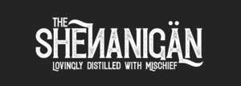

Trade Mark Journal No.2025/052 26 December 2025
UK00004277053 13 October 2025 (32,33,35)

- Class 32
- Low alcohol beer; Alcohol free beverages; Alcohol free wine; Alcohol free cider; Alcohol free aperitifs; Non-alcoholic malt drinks; Non-alcoholic malt beverages; Non-alcoholic malt free beverages [other than for medical use]; Non-alcoholic beer; Non-alcoholic beer flavored beverages; Non-alcoholic wine; Non-alcoholic drinks; Non-alcoholic beverages; Beverages (Non-alcoholic -); Alcohol-free beers; Non-alcoholic fruit vinegar beverages; Sarsaparilla [non-alcoholic beverage]; Kvass [non-alcoholic beverages]; Non-alcoholic carbonated beverages; Carbonated non-alcoholic drinks; Malt syrup for beverages; Root beers, non-alcoholic beverages; Non-alcoholic fruit drinks; Non-alcoholic honey-based beverages; Cordials (non-alcoholic beverages); Honey-based beverages (Non-alcoholic -); Fruit beverages (non-alcoholic); Non-alcoholic beverages flavored with coffee; Kvass [non-alcoholic beverage]; Distilled drinking water; Non-alcoholic beverages flavoured with coffee; Non-alcoholic grape juice beverages; Non-alcoholic soda beverages flavoured with tea; Non-alcoholic beverages with tea flavor; Carbohydrate drinks; Non-alcoholic dried fruit beverages; Non-alcoholic flavored carbonated beverages; Energy drinks containing caffeine.
- Class 33
- Rice alcohol; Alcohol (Rice -); Rum [alcoholic beverage]; Aperitifs with a distilled alcoholic liquor base; Sugarcane-based alcoholic beverages; Pre-mixed alcoholic beverages; Alcoholic energy drinks; Low alcoholic drinks; Alcoholic beverages, except beer; Alcoholic beverages (except beer); Beverages (Alcoholic -), except beer; Pre-mixed alcoholic beverages, other than beer-based; Grain-based distilled alcoholic beverages; Alcoholic cocktails; Cordials [alcoholic beverages]; Alcoholic beverages of fruit; Alcoholic fruit beverages; Alcoholic carbonated beverages, except beer; Alcoholic wines; Baijiu [Chinese distilled alcoholic beverage]; Alcoholic fruit cocktail drinks; Alcoholic beverages except beers; Alcoholic beverages (except beers); Alcoholic beverages [except beers]; Alcoholic cocktails containing milk; Alcoholic seltzers; Alcoholic coffee-based beverage; Fruit (Alcoholic beverages containing -); Alcoholic beverages containing fruit; Alcoholic cordials; Alcoholic bitters; Nira [sugarcane-based alcoholic beverage]; Alcoholic tea-based beverage; Flavored brewed alcoholic malt beverages, except beers; Flavoured brewed alcoholic malt beverages, except beers; Ginseng liquor; Alcoholic aperitifs; Alcoholic punches; Alcoholic essences; Alcoholic cocktail mixes; Prepared alcoholic cocktails; Alcoholic aperitif bitters; Preparations for making alcoholic beverages; Alcoholic preparations for making beverages; Distilled beverages; Beverages (Distilled -); Alcoholic extracts.
- Class 35
- Retail services in relation to alcoholic beverages (except beer); Wholesale services in relation to alcoholic beverages (except beer); Retail services relating to alcoholic beverages.
45 Hound Black Limited